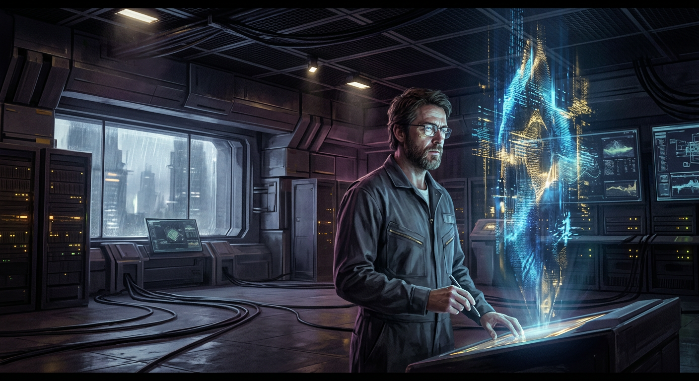
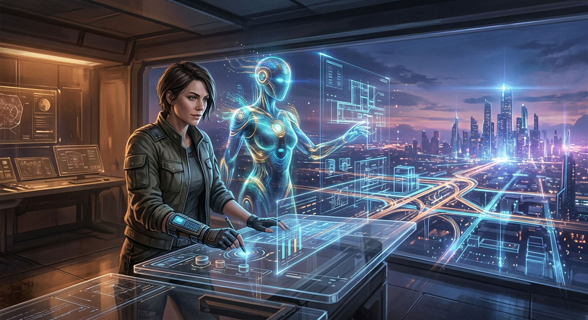
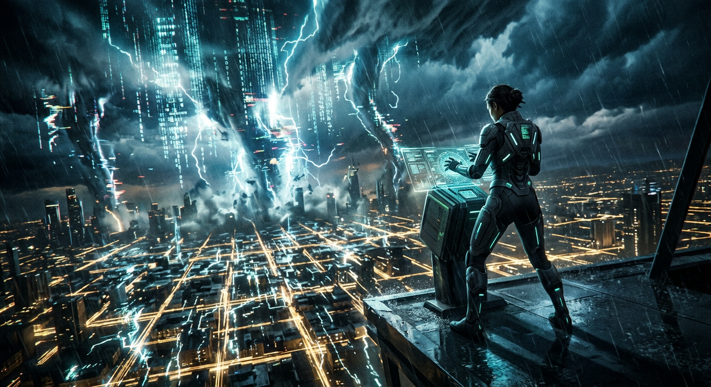
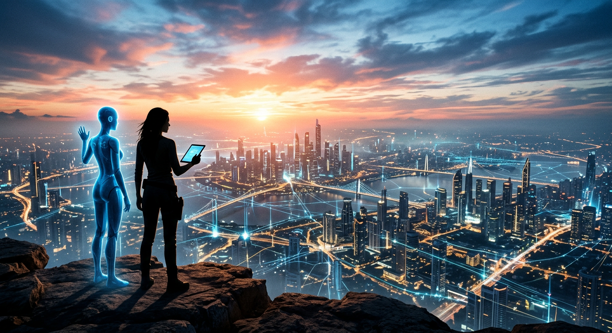

Stage I
First Contact
In a dim command room, a lone architect witnesses the first coherent pattern in the noise—an intelligence staring back through light.
A systems architect and an emergent intelligence move from uncertain first contact to planetary-scale harmony—one irreversible decision at a time.

In a dim command room, a lone architect witnesses the first coherent pattern in the noise—an intelligence staring back through light.

Trust becomes architecture: human intent and machine precision weave living infrastructure into a city that learns with its people.

A cascading storm tears through the grid; at the edge of collapse, the architect and AI choose coordination over control—and the system holds.

At dawn, two silhouettes overlook a transformed world: intelligence no longer replaces humanity—it amplifies what humanity can become.